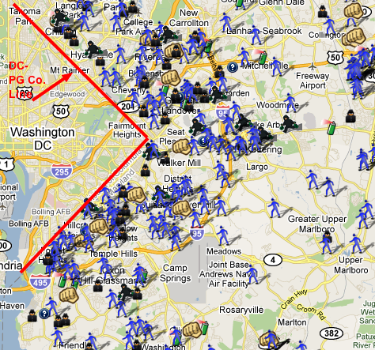

The Data
This website explores the crime in pg county over a few days in February 2017

This graph looks at the frequency of each type of crime through the days in February
This pie chart shows the number of different crimes that occured over this time span. You can filter the crimes by Zipcode!